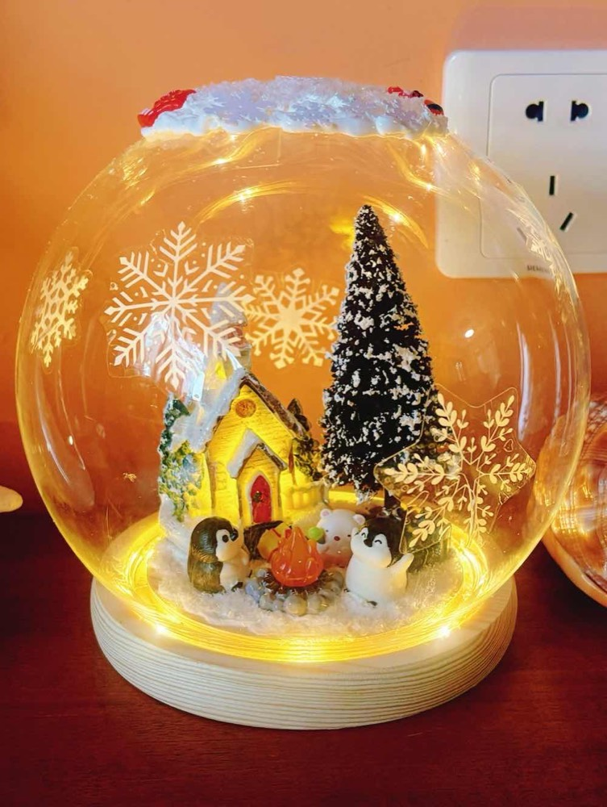
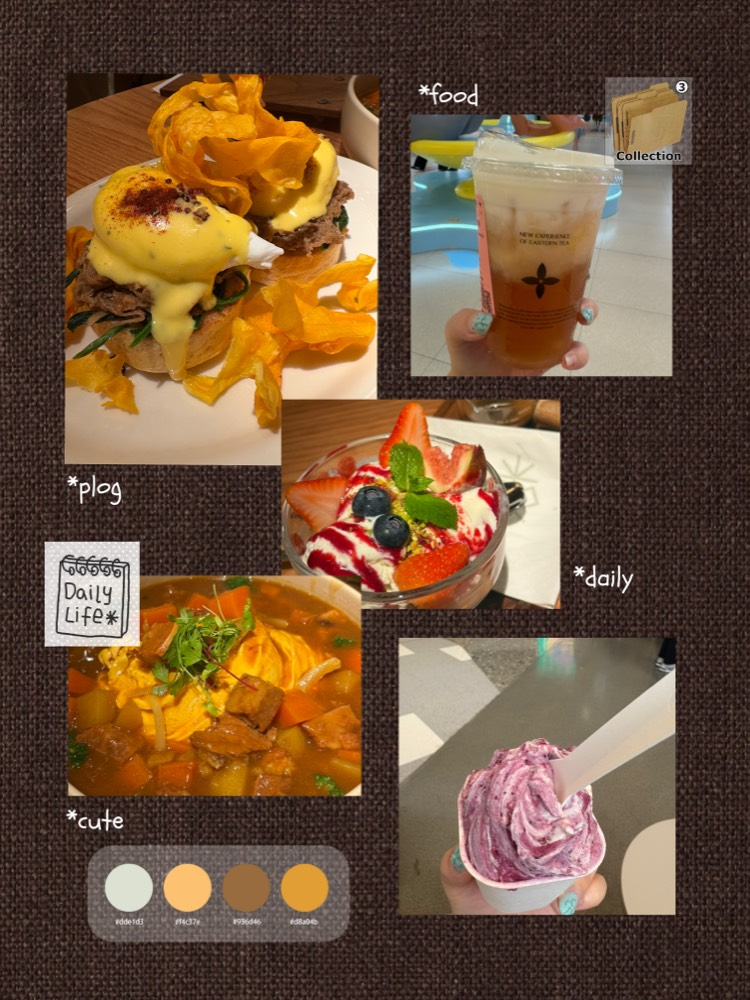

Off Screen
Off Screen
Click the right half of the book to turn forward, the left half to go back. Arrow keys, the buttons below, and swiping on mobile all work too.
Xu Xinyue · Off Screen
Three things off screen
Craft, food, travel. They work the same way my product thinking does: make something first, then draw the lesson.
Hobby 01
Craft
Raw material to finished object, by hand.

01 / 03
Hobby 02
Food
A complete result inside a single hour.

02 / 03
Hobby 03
Travel
Plan it in detail, then tear half of it up.
03 / 03
The End
That's it — want to talk?
If you also make things by hand, love cooking, or just got back from somewhere, I'd like to hear it. Work topics are welcome too.
Colophon
Back cover
This book was bound by hand with HTML, CSS and vanilla JavaScript — no frameworks.